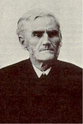

Rv William Orcutt
Cushing USA 1823-1903.

Born at Hingham, MA, he
read the Bible as a teenager and became a follower of the Orthodox Christian
school of thought. At age 18 he decided to become a minister, following in
his parents theology. His first pastorate was at the Christian Church,
Searsburg, NY. He married Hena Proper in 1854. She was a great help to him
throughout his ministry. He ministered at several NY locations over the
years, including Searsburg, Auburn, Brookley, Buffalo, and Sparta. Hena died
in 1870, and he returned to Searsburg, again serving as pastor there.
Working diligently with the Sunday school, he was dearly beloved by young
and old. Soon after, he developed a creeping paralysis that caused him to
lose his voice. He retired from ministry after 27 years. He once gave all
his savings ($1000) to help a blind girl receive an education. He was
instrumental in the erection of the Seminary at Starkey, NY. He gave
material aid to the school for the blind at Batavia. He was mindful of the
suffering of others, but oblivious to his own. After retiring, he asked God
to give him something to do. He discovered he had a talent for writing and
kept busy doing that. He authored about 300 hymn lyrics. The last 13 years
of his life he lived with Rev. and Mrs. E. E Curtis at Lisbon Center, NY,
and joined with the Wesleyan Methodist Church there. He died at Searsburg,
NY.
John Perry
==================
Cushing, William Orcutt , born at Hingham,
Massachusetts, Dec. 31, 1823, is the author of the following hymns which
appear in I. D. Sankey's Sacred Songs and Solos:¡X
1. Beautiful valley of
Eden. Heaven.
2. Down in the valley with my Saviour I would go. Trusting
to Jesus.
3. Fair is the morning land. Heaven.
4. I am resting so sweetly in Jesus now. Rest and Peace
in Jesus.
5. I have heard of a land far away. Heaven.
6. O safe to the Rock that is higher than I. The Rock
of Ages.
1. Ring the bells of heaven, there is joy today. Heavenly
Joy over repenting Sinners.
8. We are watching, we are waiting. Second Advent
anticipated.
Mr. Cushing has also
several additional hymns in some American Sunday School collections, and
collections of Sacred Songs.
-- John Julian, Dictionary
of Hymnology
Robert Lowry was born in
Philadelphia, March 12, 1826.

His fondness for music was
exhibited in his earliest years. As a child he amused himself with the
various musical instruments that came into his hands. At the age of
seventeen he joined the First Baptist Church of Philadelphia, and soon
became an active worker in the Sunday-school as teacher and chorister.
At the age of twenty-two
he gave himself to the work of the ministry, and entered upon a course of
study at the University of Lewisburg, Pa. At the age of twenty-eight he was
graduated with the highest honors of his class. In the same year of his
graduation, he entered upon the work of the ministry. He served as pastor at
West Chester, Pa., 1851-1858; in New York City, 1859-1861; in Brooklyn,
1861-1869; in Lewisburg, Pa., 1869-1875. While pastor at Lewisburg, he was
also professor of belles lettres in the University, and received the
honorary degree of D. D. in 1875.
He then went to
Plainfield, N. J., where he became pastor of Park Avenue Church. In each of
these fields his work was crowned with marked success.
Dr. Lowry was a man of
rare administrative ability, a most excellent preacher, a thorough Bible
student, and whether in the pulpit or upon the platform, always a brilliant
and interesting speaker. He was of a genial and pleasing disposition, and a
high sense of humor was one of his most striking characteristics. Very few
men had greater ability in painting pictures from the imagination. He could
thrill an audience with his vivid descriptions, inspiring others with the
same thoughts that inspired him.
His melodies are sung in
every civilized land, and many of his hymns have been translated into
foreign tongues. While preaching the Gospel, in which he found great joy,
was his life-work, music and hymnology were favorite studies, but were
always a side issue, a recreation.
In the year 1880, he took
a rest of four years, visiting Europe. In 1885 he felt that he needed more
rest, and resigned his pastorate at Plainfield, and visited in the South and
West, also spending some time in Mexico. He returned, much improved in
health, and again took up his work in Plainfield.
On the death of Wm. B.
Bradbury, Messrs. Biglow & Main, successors to Mr. Bradbury in the
publishing business, selected Dr. Lowry for editor of their Sunday-school
book, Bright Jewels, which was a great success.
Subsequently Dr. W. Doane was associated with him in the issue of the
Sunday-school song book, Pure Gold, the sales of which
exceeded a million copies. Then came Royal Diadem, Welcome
Tidings, Brightest and Best, Glad
Refrain, Good as Gold, Joyful
Lays, Fountain of Song, Bright
Array, Temple Anthems, and numerous other
volumes. The good quality of their books did much to stimulate the cause of
sacred song in this country.
When he saw that the
obligations of musical editorship were laid upon him, he began the study of
music in earnest, and sought the best musical text-books and works on the
highest forms of musical composition. He possessed one of the finest musical
libraries in the country. It abounded in works on the philosophy and science
of musical sounds. He also had some musical works in his possession that
were over one hundred and fifty years old.
One of his labors of love
some years ago was an attempt to reduce music to a mathematical basis. On
the established fact that Middle C has two hundred and fifty-six vibrations
per second, he prepared a scale and went to work on the rule of three. After
infinite calculation and repeated experiments, he carried it far enough to
discover that it would not work.
A reporter once asked him
what was his method of composition ¡X "Do you write the words to fit the
music, or the music to fit the words?" His reply was, "I have no method.
Sometimes the music comes and the words follow, fitted insensibly to the
melody. I watch my moods, and when anything good strikes me, whether words
or music, and no matter where I am, at home or on the street, I jot it down.
Often the margin of a newspaper or the back of an envelope serves as a
notebook. My brain is a sort of spinning machine, I think, for there is
music running through it all the time. I do not pick out my music on the
keys of an instrument. The tunes of nearly all the hymns I have written have
been completed on paper before I tried them on the organ. Frequently the
words of the hymn and the music have been written at the same time."
The Doctor frequently said
that he regarded "Weeping Will Not Save Me" as the best and most
evangelistic hymn he ever wrote. The following are some of his most popular
and sweetest gospel melodies: "Shall We Gather at the River?," "One More
Day's Work for Jesus," "Where is My Wandering Boy To-night?," "I Need Thee
Every Hour," "The Mistakes of My Life," "How Can I Keep from Singing?," "All
the Way My Saviour Leads Me," "Saviour, Thy Dying Love," "We're Marching to
Zion," etc. "Shall We Gather at the River?" is perhaps, without question,
the most widely popular of all his songs. Of this Mr. Lowry said: "It is
brass band music, has a march movement, and for that reason has become
popular, though for myself I do not think much of it." Yet he tells us how,
on several occasions, he had been deeply moved by the singing of that hymn,
"Going from Harrisburg to Lewisburg once I got into a car filled with
half-drunken lumbermen. Suddenly one of them struck up, "Shall We Gather at
the River?" and they sang it over and over again, repeating the chorus in a
wild, boisterous way. I did not think so much of the music then as I
listened to those singers, but I did think that perhaps the spirit of the
hymn, the words so flippantly uttered, might somehow survive and be carried
forward into the lives of those careless men, and ultimately lift them
upward to the realization of the hope expressed in my hymn." "A different
appreciation of it was evinced during the Robert Raikes' Centennial. I was
in London, and had gone to meeting in the Old Bailey to see some of the most
famous Sunday-school workers in the world. They were present from Europe,
Asia, and America. I sat in a rear seat alone. After there had been a number
of addresses delivered in various languages, I was preparing to leave, when
the chairman of the meeting announced that the author of "Shall We Gather at
the River?" was present, and I was requested by name to come forward. Men
applauded and women waved their handkerchiefs as I went to the platform. It
was a tribute to the hymn; but I felt, when it was over, that, after all, I
had perhaps done some little good in the world, and I felt more than ever
content to die when God called." On Children's Day in Brooklyn, in 1865,
this song was sung by over forty thousand voices.
While Dr. Lowry said, "I
would rather preach a gospel sermon to an appreciative, receptive
congregation than write a hymn," yet in spite of his preferences, his hymns
have gone on and on, translated into many languages, preaching and
comforting thousands upon thousands of souls, furnishing them expression for
their deepest feelings of praise and gratitude to God for His goodness to
the children of men. What he had thought in his inmost soul has become a
part of the emotions of the whole Christian world. We are all his debtors.
Rev. Robert Lowry, D. D.,
died at his residence in Plainfield, K J., November 25, 1899. Dead, yet he
lives and his sermons in gospel song are still heard and are doing good. Dr.
Lowry was a great and good man, and his life, well spent, is highly worthy
of a place among the world's greatest gospel song and hymn writers.
-- Biography
of Gospel Song and Hymn Writers